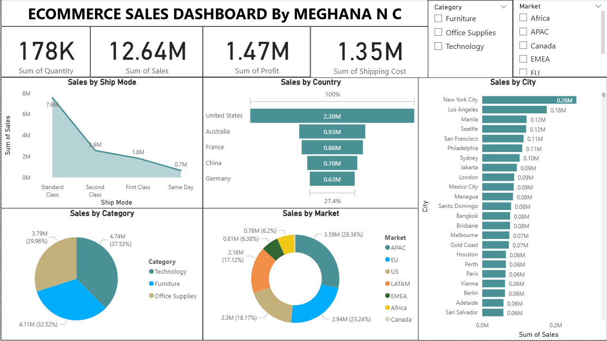
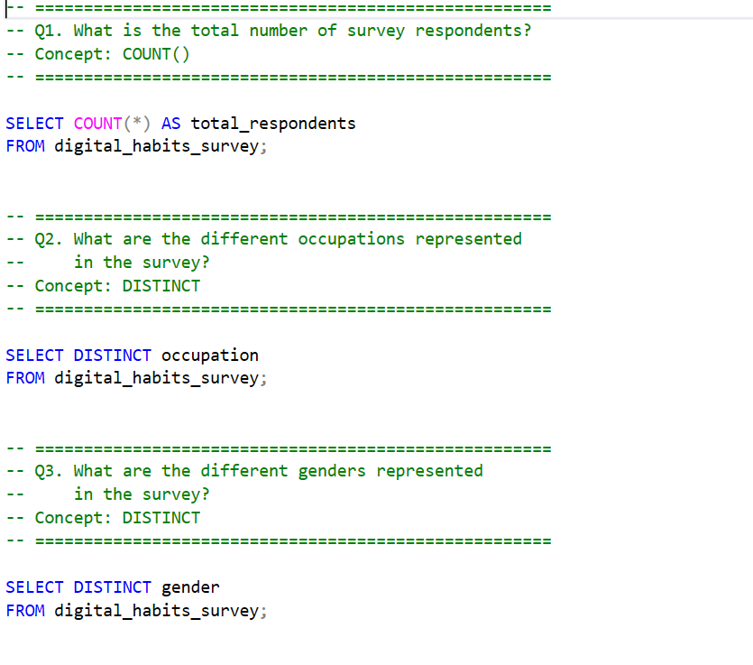
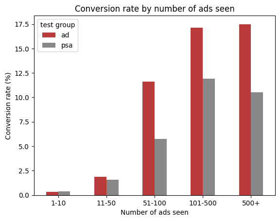

Meghana N C
Data Analyst
Data Analyst skilled in SQL, Salesforce (SOQL), Python, Power BI and Advanced Excel.
I turn lead, marketing and operational data into decisions.
Featured Project
An interactive Power BI dashboard developed as part of a live
TechTip24 Power BI workshop. The project analyzes sales, profit,
shipping costs, product categories, markets, ship modes, and
geographic performance to generate actionable business insights.


Power BI dashboard on a public dataset of 200,000 marketing campaigns across
6 channels. I cleaned the data, built KPIs (CTR, CPC, ROI, conversion rate)
and checked every chart against the overall numbers. The result: ROI,
conversion rate and engagement are almost identical across channels, campaign
types and customer segments, and spending more per campaign does not raise ROI.
Recommendation: run controlled tests before shifting budget

An analysis of social media content to identify content trends,
sentiment patterns, and audience engagement, using Power BI to
transform data into meaningful business insights.
End-to-End Data Analytics Project

An end-to-end data analytics project analyzing digital habits,
screen-time behavior, online learning, and productivity from a
68-respondent survey using Excel, Python, SQL, MySQL, and Looker Studio.
Statistics & Experimentation | Python

Hypothesis test on a public dataset of 588,101 users. The ad lifted conversion from
1.79% to 2.55% (+43%, p < 0.001, 95% CI 0.59 to 0.94 points), with the gain
concentrated among users who saw 51 or more ads. Includes breakdowns by ad exposure,
day and hour, and a clear limitations section.
Tools: Python, pandas, statsmodels, matplotlib, Google Colab
I am a Data Analyst with experience in analyzing business,
marketing, and operational data. I use SQL, Python, Power BI,
and Advanced Excel to transform data into meaningful insights
and support data-driven decision making.
I enjoy understanding business requirements, exploring data,
identifying trends and patterns, and presenting insights in a
clear and meaningful way. I am continuously developing my
analytical and technical skills with the goal of growing in
Data Analytics and Data Science.
My Skills
Technical Skills
I work with a range of data analytics tools and technologies
to collect, clean, analyze, visualize, and communicate data.
Querying & Analysis
- SQL (MySQL)
- Salesforce SOQL
- Python
- Advanced Excel (SUMIFS, COUNTIFS, FILTER, UNIQUE, XLOOKUP, pivot tables)
- Formula-based Excel report automation
BI & Visualization
- Power BI
- Looker Studio
- KPI Dashboard Development
- Data Visualization
Data Integration & Quality
- Pabbly Connect, Google Apps Script
- Data Cleaning & Validation
- Data Reconciliation & Mapping
- ETL
Business Analysis
- Campaign & Lead Quality Analysis
- Root-Cause Analysis
- MIS & Management Reporting
- Stakeholder Reporting
My Experience
Professional Experience
Trainee Data Analyst
Clinilaunch Research Institute (CLRI) | Sep 2025 – Present
-
Automated recurring reporting workflows in Excel, including the daily Grievance & Redressal report using SUMIFS, COUNTIFS, FILTER, UNIQUE, and month-wise dropdowns, reducing manual reporting effort by approximately 89% and improving reporting consistency.
-
Integrated and validated Facebook and Google lead data between Pabbly Connect and Salesforce, mapping contact, course, lead source, language, state, city, campaign, and UTM fields with course-specific rules to ensure accurate lead capture and data consistency.
-
Identified and processed missing phone-inquiry leads from ACE Phone by cleaning and validating lead data and inserting records into Salesforce, maintaining complete and accurate lead records.
-
Analyzed Lead Warehouse data across 40+ campaigns, tracking 256 leads and 70 junk leads (27.3% junk rate) using Excel and segmenting lead quality by campaign, counselor, and team lead to identify high-junk sources and support lead-quality and follow-up decisions.
-
Built and maintained campaign-level marketing analytics reports in Excel by reconciling backend and Salesforce leads and tracking enrollments, conversion rate, spend, CPL, CAC, revenue, ROI, invalid leads, interested leads, RNR, and callback rates to monitor campaign performance and lead quality.
-
Managed lead balancing and allocation across Sales teams by segmenting leads based on language, course, team size, team lead, and counselor capacity, ensuring balanced distribution and supporting efficient lead follow-up.
-
Built an analytical sales and revenue report in Excel covering enrollments, revenue, collected and pending amounts, collection rate, week-over-week growth, and business-unit comparisons to evaluate sales performance.
-
Analyzed student grievances and feedback using Excel and Power BI, identifying repeated and unique escalations, root causes, process gaps, and action-required cases, while developing KPI dashboards tracking total, closed, and open tickets and closure rate to support resolution tracking and operational improvements.
-
Analyzed and maintained HR and recruitment data using Excel, consolidating, cleaning, and validating hiring-related information to track recruitment activity and hiring progress, and preparing management reports for the CEO to evaluate recruitment performance and identify process gaps.
Junior Software Engineer
Mitra Softwares | Mar 2024 – Aug 2024
-
Automated academic-class promotion using Python (pandas) after cleaning and validating student data in Excel, replacing manual record-by-record updates across student datasets.
-
Maintained a Python data validation script that compared pre- and post-promotion records, matching student names and flagging class-value mismatches before updates were finalized.
-
Supported large-scale student data migration from legacy to new ERP systems by collecting, cleaning, validating, and formatting data for multiple school clients, including datasets of 300+ students per school.
-
Analyzed ERP system data to identify process gaps and prepared reports supporting operational and business decisions.
-
Supported ERP Android app deployment (APK generation, Google Play Console publishing) and redesigned client websites.
Data Analyst Intern
Psyliq | Dec 2023 – Feb 2024
-
Analyzed HR and healthcare datasets using SQL and Power BI by collecting, cleaning, transforming, and validating data to identify trends and generate actionable business insights.
-
Developed interactive Power BI dashboards and presented analytical findings to stakeholders, supporting data-driven decision-making and process improvements.
M.Sc. in Data Science
REVA University | 2023
Bachelor of Computer Applications (BCA)
Kuvempu University | 2021
I'm open to Data Analyst and Data Science opportunities.
If you'd like to discuss a project, opportunity, or collaboration,
feel free to connect with me.